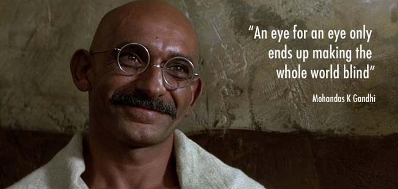

1) Reason for India Disqualified form FIFA in 1950 was Player want to play Barefoot

India made it to FIFA 1950 after four teams backed out from participating. The tour to Brazil was a costly affair and AIFF thought that India had no chance of winning against the likes of Italy. To escape embarrassment, AIFF blamed the FIFA for not accepting players who wanted to play barefoot
2) Milkha Singh Never Looked Back in 1960 Rome Olympics
Many believe that our Flying Sikh looked back during the 400m race at the 1960 Rome Olympics but the truth is that he wasn't even leading in the same race, let alone him looking back. He was fourth and came fourth overall in the race.
3) Is Hockey is India's National Sport ?? NO!!
Blame it on our school text books, we were always told that hockey is India's national sport. Well, it's not! There's no national sport of India.
4) Gandhi Never said "An Eye For An Eye Will Leave The World Blind"

While pseudo-intellectuals go around advocating that these words were Gandhi's very own, the fact is just the opposite. There's no evidence in Gandhi's recorded history of him saying this. It was actually said by Ben Kingsley in the movie Gandhi.
5) Varanasi is The World's Oldest Inhabited City
Well, let's keep it short and clear. Varanasi is not the world's oldest city and nor is it the world's oldest 'continuously inhabited city'. It is 'one of the many oldest inhabited cities' and there are many other cities that existed way before Varanasi.
6) Indian Railways is Not the World's Largest Employee Base

For years Indians have believed that the Indian Railways is the largest employer of manpower on the planet. Although the Railways do have an army of employees but it most certainly does not have the world's largest employee base.
7) Hindi Is The Official/National Language Of India
Probably the most propagated lie in our country, Hindi is neither the official nor the national language of our country.
8) India Has Been Officially Secular Since 1947
It was only an amendment made in 1976 under which the word 'secular' was included in the Preamble. In contrast, the Supreme Court has always upheld the claim that India has been secular since 1947.
9) This Picture Of Gandhi Dancing With A White British Lady
Before you Gandhi haters start running him down for another reason, the man in the photo is not Gandhi. This is actually an Australian actor dressed like Gandhi for a party.
10) UNESCO Declares Indian National Anthem Best In The World
Yes, this actually became massive news in 2014 when a fake email apparently issued by UNESCO surfaced claiming 'Jana Gana Mana' the best national anthem in the world. Well, this was obviously a hoax which is bound to go down in the history books.